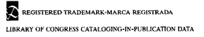

DUTTON
Published by Penguin Group (USA) Inc.
375 Hudson Street, New York, New York 10014, U.S.A.
Penguin Group (Canada), 10 Alcorn Avenue, Toronto, Ontario, Canada M4V 3B2 (a division of Pearson
Penguin Canada Inc.); Penguin Books Ltd, 80 Strand, London WC2R 0RL, England; Penguin Ireland,
25 St Stephen’s Green, Dublin 2, Ireland (a division of Penguin Books Ltd); Penguin Group (Australia),
250 Camberwell Road, Camberwell, Victoria 3124, Australia (a division of Pearson Australia Group Pty
Ltd); Penguin Books India Pvt Ltd, 11 Community Centre, Panchsheel Park, New Delhi - 110 017, India;
Penguin Books (NZ), cnr Airborne and Rosedale Roads, Albany, Auckland, 1310, New Zealand (a divi
sion of Pearson New Zealand Ltd.); Penguin Books (South Africa) (Pty) Ltd, 24 Sturdee Avenue,
Rosebank, Johannesburg 2196, South Africa
Penguin Books Ltd, Registered Offices: 80 Strand, London WC2R 0RL, England
First Dutton printing, March 1992
First Dutton printing (Centennial Edition), May 2005
Copyright © Ayn Rand, 1957. Copyright renewed 1985 by Eugene Winick, Paul Gitlin and Leonard Peikoff Introduction copyright © 1992 by Leonard Peikoff
All rights reserved.

Rand, Ayn.
Atlas shrugged / Ayn Rand.
p. cm.
With new introd.
eISBN : 978-1-101-13719-2
I. Title.
PS3535.A547A94 1992
813’.S2—dc20
91-36842
CIP
PUBLISHER’S NOTE
This is a work of fiction. Names, characters, places, and incidents are either the product of the author’s imagination or are used fictitiously, and any resemblance to actual persons, living or dead, business establishments, events, or locales is entirely coincidental.
Without limiting the rights under copyright reserved above, no part of this publication may be reproduced, stored in or introduced into a retrieval system, or transmitted, in any form, or by any means (electronic, mechanical, photocopying, recording, or otherwise), without the prior written permission of both the copyright owner and the above publisher of this book.
The scanning, uploading, and distribution of this book via the Internet or via any other means without the permission of the publisher is illegal and punishable by law. Please purchase only authorized electronic editions, and do not participate in or encourage electronic piracy of copyrighted materials. Your support of the author’s rights is appreciated.
This book is printed on acid-free paper
http://us.penguingroup.com